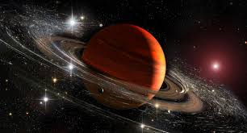

|

SATÜRN
Satürn, Güneş’e en yakın altıncı gezegen olup Güneş Sistemi’nin ikinci en büyük gezegenidir. En belirgin özelliği, çevresini saran muhteşem halkalarıdır.
Bu halkalar buz, kaya ve toz parçacıklarından oluşur ve gezegenin etrafında muazzam bir görünüm oluşturur. Satürn’ün halkaları çok geniştir, fakat oldukça
incedir; bazı yerlerde yalnızca birkaç yüz metre kalınlığındadır.
Satürn bir gaz devidir, yani tıpkı Jüpiter gibi büyük oranda hidrojen ve helyumdan oluşur. Katı bir yüzeye sahip değildir. Yoğunluğu o kadar düşüktür ki,
teorik olarak devasa bir su kütlesine bırakılmış olsa yüzebilir. Bu düşük yoğunluk, Satürn’ü Güneş Sistemi’ndeki en hafif gezegen yapar.
Gezegenin atmosferi sarı, altın ve kahverengi tonlarında bulut kuşaklarıyla kaplıdır. Bu kuşaklar sürekli hareket halindedir ve zaman zaman büyük
fırtınalar oluşur. Satürn’ün rüzgar hızları saatte 1800 kilometreye kadar çıkabilir. Kendi ekseni etrafında çok hızlı döner; bir Satürn günü yaklaşık
10 saat 40 dakika sürer. Ancak Güneş etrafında bir tam turu yaklaşık 29,5 Dünya yılına eşittir.
Satürn’ün çok sayıda uydusu vardır — şu ana kadar 80’den fazla tespit edilmiştir. En büyük uydusu Titan, Dünya benzeri bir atmosferi olan tek uydudur.
Titan’ın yüzeyinde sıvı metan ve etandan oluşan göller bulunduğu düşünülmektedir. Bu nedenle Titan, Güneş Sistemi’nde yaşam ihtimali açısından en çok
incelenen gökcisimlerinden biridir.
Satürn’ün güçlü bir manyetik alanı vardır, ancak Jüpiter kadar kuvvetli değildir. Bu manyetik alan ve halkalar, gezegenin kutup bölgelerinde göz alıcı
aurora (kutup ışıkları) oluşumlarına neden olur.
Sonuç olarak Satürn, zarif halkaları, devasa boyutu ve gizemli uydularıyla Güneş Sistemi’nin en büyüleyici gezegenlerinden biridir. Görkemli yapısı,
onu hem amatör gökbilimciler hem de bilim insanları için gözlemlenmesi en etkileyici gök cisimlerinden biri haline getirmiştir.
|